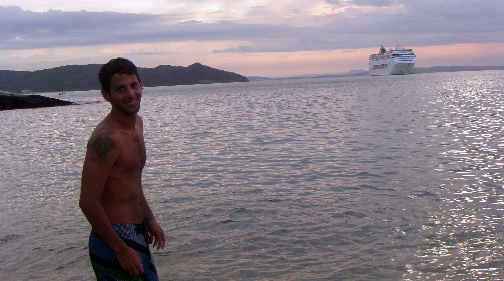

Así es, la visita a la ciudad de Buzios (Río de Janeiro) fue el primer desafío que tuve para armar y presupuestar un viaje. No tenía absolutamente ni la menor idea de como hacerlo y muchos de mis conocidos me decían que era muy caro Buzios, que busque alguna otra alternativa en Brasil. Creo que mientras mas me decían que era difícil ir, más me entusiasmaba y más leía sobre el destino. Definitivamente la concepción que se tiene de Buzios como un lugar inalcanzable no es real. Todo depende de los lugares donde se vaya a comer, donde uno se hospede y demás, por eso, fue extremadamente importante la información que pude encontrar antes del viaje. En este viaje hubo un condimento especial, era el primero que hacia junto con @mechi , hace poco que estábamos saliendo y organizar vacaciones con alguien que estas conociendo puede ser catastrófico y alejar a una pareja o puede ser una experiencia de vida sin igual.
Nuestra convivencia tuvo momentos difíciles sobre todo por el clima que nos desesperaba, ir a Brasil en pleno marzo es complicado, un punto que no había tenido en cuenta a la hora de juntar información. Sin embargo, nos hizo crecer individualmente y en pareja y desde ahí que cada vez que vamos a hacer un viaje entendemos casi hasta sin hablar lo que quiere cada uno y lo que disfruta el otro.
Praia da Tartaruga, Buzios, Brasil.
Buzios es un lugar totalmente mágico, son playas con aguas color verde esmeralda, es gente cálida con mucha buena onda, es Rua das Pedras (una calle peatonal que a la noche se ilumina y da paso a galerías, restaurantes y bares frente al mar), es hinchas de fútbol con los televisores en las calles, tomando y alentando a su equipo, es la vida nocturna en Porto da Barra disfrutando unos tragos en un coco y sentados en un sillón frente a la playa. Otra ventaja que tiene es que queda muy cerca de Arraial do Cabo, una joyita brasilera que no tiene desperdicio, un lugar donde se encuentran sin lugar a dudas algunas de las playas mas lindas del mundo.
Definitivamente es un lugar increíble, al que para llegar, debemos aterrizar en el Aeropuerto de Río de Janeiro y luego tomar un transfer o encontrar alguna otra manera económica de llegar, como por ejemplo el servicio de autobuses local. Una buena opción es tomarse un micro desde el aeropuerto a la terminal de Rodoviária do Rio (también conocida como Rodoviária Novo Rio) por aproximadamente R$15. Luego, tomar un ómnibus RIO/BUZIOS que cuesta unos R$58 por tramo con fecha a Enero de 2019. Con esta alternativa, mientras que nosotros gastamos unos 80usd por persona ida y vuelta en contratar un transfer, ustedes pueden llegar al mismo destino pero mucho más barato. El siguiente link corresponde a la empresa Rodoviária do Rio.
Nuestro hospedaje fue en Flowers Suites, un complejo de monoambientes con heladera, microondas y tostadoras atendidos por Jader y Leila, dos personas tan pero tan amables que no me dan las palabras para agradecerle la buena onda que le pusieron, Leila hasta me ayudo a sacar una espina que me clave nadando. Una madre más pero con acento portugués y con la playa a 10 cuadras de su casa.
.Praia da Tartaruga, Buzios, Brasil.
Tartaruga se encontraba a 10 cuadras de donde nos hospedábamos y eso no fue casualidad. Después de mucho leer, llegue a la conclusión de que la playa más recomendado por su belleza era Tartaruga, a raíz de eso, decidimos reservar cerca. La primera vez que llegamos a la playa fue un tanto extraño. Eran las 17:30hs, recién habíamos llegado desde el Aeropuerto y estábamos desesperados por ir a la playa. Leila, nos había explicado que era un poco tarde para ir pero no hicimos mucho caso, podían más nuestras ansias. El camino hacia Tartaruga lo empezamos de día y lo terminamos de noche, al llegar a la entrada nos topamos con un restaurante hermosamente iluminado, al adentrarnos en él nos dijeron que se estaba por festejar un casamiento, sin lugar a dudas, un lugar más que romántico para casarse. Esa noche simplemente hicimos una breve recorrida por la playa, pero volveríamos al otro día temprano, muy temprano.
A la mañana siguiente, nos levantamos a las 7:00hs, emocionados, queríamos aprovechar el día. Las nubes cubrían el cielo y amenazaban con lagrimear, pero encaramos hacia Tartaruga. Allí, nos encontramos con unos chicos muy copados a los que les hicimos dedo y nos dejaron en la playa, lo de hacer dedo no fue por vagancia, sino por ansias de llegar cuanto antes. En el ingreso divisamos que no había absolutamente nadie en la playa, nos miramos sorprendidos, y decidimos dejar las cosas y hacer un primer baño. Puse un pie en el mar, el otro, y me lance, el agua era deliciosamente cálida. Sin embargo, me sorprendí al ver un movimiento raro en el agua lo cual hizo que me quede absolutamente helado, casi sin respirar. Paso un momento, y vi a lo lejos que asomaba la cabeza una tortuga, ahí entendí que habíamos hecho todo bien en elegir Buzios y que el contacto con la naturaleza era lo que me llenaba el alma. Ese día alquilamos un kayak y anduvimos casi dos horas a un precio bastante barato. Allí, vimos otra tortuga a lo lejos.
Una característica importante de Tartaruga, como otros destinos de playa de Brasil, es que con la compra de comida, bebidas y otras cosas que venden en los paradores, el comprador tiene derecho a las reposeras y a una mesa con sombrilla. Lo cual, es muy beneficioso para esos días en que el sol nos derrite.
Azeda y Azedinha son dos hermanas hermosas que se encuentran un tanto separadas del centro de Buzios y por las cuáles se llega caminando y caminando. Pero simplemente, no tienen desperdicio, son muy lindas para nadar en aguas calmas, pasar el día, tomarse un Açai con cereales (un helado a base de una fruta que solo se consigue allá, ¡Es exquisito!) y disfrutar de música con una de las mejores vistas de atardeceres en Buzios. Lo que es cierto, es que las playas son pequeñas y están muy pegaditas, por lo tanto en temporada alta se suele llenar muchísimo. Nosotros, en marzo, padecimos un sobre-poblamiento de gente debido a que cuando decidimos visitarla toco un día hermoso.
Atardecer en Praia Azeda.
Con las recomendaciones voy a ser lo más sincero posible y no me interesa si crítico o no a un lugar o a una playa determinada. Hace poco me paso que fui a un alojamiento reservado por AIRBNB donde la cocina estaba extremadamente sucia, al hacer pública mi opinión sobre la suciedad (había grasa en el horno, y cuando digo grasa, me refiero a mucha grasa), la inquilina me mando un mensaje enojada, preguntando el motivo de por qué no le había dicho directamente a ella el problema de la suciedad. El deber de todos los que participan en AIRBNB es decir la realidad, las cosas buenas y malas, así funciona la página y acá voy a intentar manejarme igual.
Praia Brava es un lugar donde hay muchas olas en comparación con las aguas calmas de otros lugares de Buzios. El agua es marrón y hay una visibilidad nula del fondo marino. En lo personal, no me gustan para nada este tipo de playas, aunque es cierto las olas que pegan y pegan hacen un poco divertida la estadía en este lugar. Las playas, van en gusto, a mi me gustan otros tipos de playas y Praia Brava no me enamoro, ni me conquistó, hasta le dimos una oportunidad al restaurante del lugar que brindaba con la compra de comida unas camas reposeras (esas si muy lindas). Pero los precios eran desorbitantes, mucho más caros que en Rua Das Pedras y que en las otras playas. El complejo se llama Slik Beach Club y si bien es muy coqueto, es extremadamente caro.
En esta playa pasamos una sola tarde, queda muy cerca del centro, y es útil para darse un baño después de recorrer Rua Das Pedras. El día que nos toco visitarla fue todo un tanto raro, la playa tenía solamente 5mts de arena aproximadamente, después era todo agua y barcos. Encima, se ingresa a la playa por un caminito en bajada, el resto de la playa da a unas especies de paredones. Por lo tanto, se generaba una sensación extraña, como si el mar estaba avanzando y uno no podría escapar de él. Pero ese sentimiento un tanto apocalíptico hizo muy linda la tarde. Pasamos todo el rato nadando y nadando, el agua cálida y verde esmeralda lo ameritaba. Definitivamente vale la pena echarse un clavadito si se esta por la zona.
Praia Canto, Buzios, Brasil.
A nivel conclusión, nuestro primer viaje presupuestado salió increíble y el dinero alcanzó de manera perfecta. Comimos, tomamos, nos divertimos y sobre todo disfrutamos de otro #DestinoPlayas.